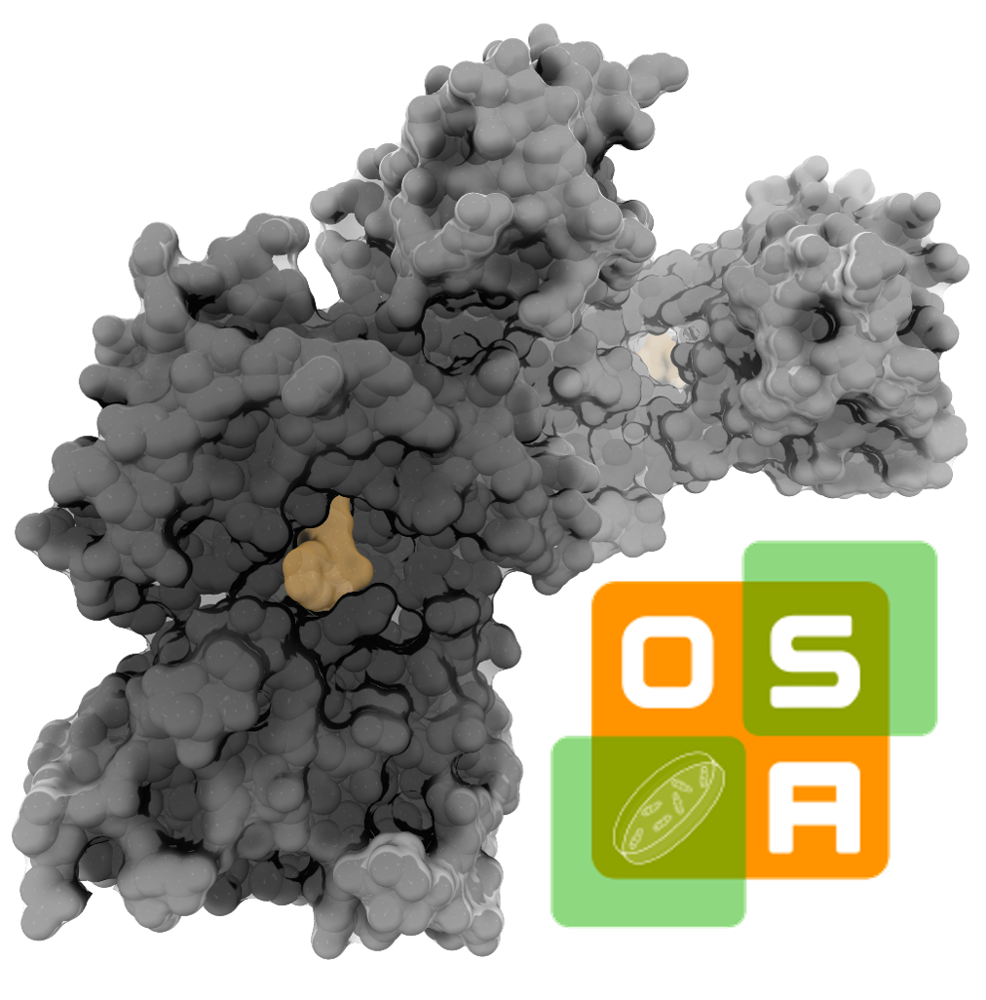

Laboratory of Structural Biology, Enzymology, and Biophysics dedicated to
the generation of new classes of antimicrobials. Our research primarily focuses
on tuberculosis, with additional projects on ESKAPE pathogens and intracellular organisms.
We collaborate with international groups, including experts in medicinal chemistry and microbiology.
Current Projects
Multitargeting antimicrobials

The OSA project.
The group is a member of the international Open-Source Antibiotics consortium (OSA), which brings
together institutions from Spain, United Kingdom and USA to accelerate the development of new antimicrobials.
This collaboration integrates leading expertise in bacterial biochemistry, chemistry, genetics, physiology, and microbiology,
with a particular focus on peptidoglycan metabolism, structure, and architecture. The central aim is to design drug-like molecules
capable of inhibiting multiple structurally related enzymes, reducing the likelihood of antimicrobial resistance, and we focused on
the protein family Mur ligases (MurC, MurD, MurE, and MurF). These enzymes catalyze consecutive steps in the cytoplasmic biosynthesis
of peptidoglycan layer, and are essential for bacterial survival. Although Mur ligases share structural similarities, they are remarkably
flexible, often adopting different open/close states and quaternary structures. For this reason, ligand–protein structural studies are
crucial to the project’s progress. At the IQF-CSIC, we use X-ray crystallography to obtain high-resolution structures of Mur ligases
from Mycobaterium tuberculosis and ESKAPE pathogens, in complex with natural substrates, cofactors, intermediates, and novel inhibitors.
These data are fundamental for the rational design of new inhibitors at OSA (OSA website).
Mycobaterium tuberculosis (Mtb) is a highly adaptable intracellular pathogen that employs multiple strategies to
evade host innate immunity. Its complex cell wall limits compound permeability, together with its rapid adaptive responses
under drug pressure drive the emergence of multi-drug resistance. To try overcoming these challenges, this project focuses
on developing drug-like inhibitors that target Mtb proteins secreted into the host cytoplasm and actively suppress innate
immune responses. By inhibiting these proteins, we aim to restore host immune activity and identify new therapeutic avenues.